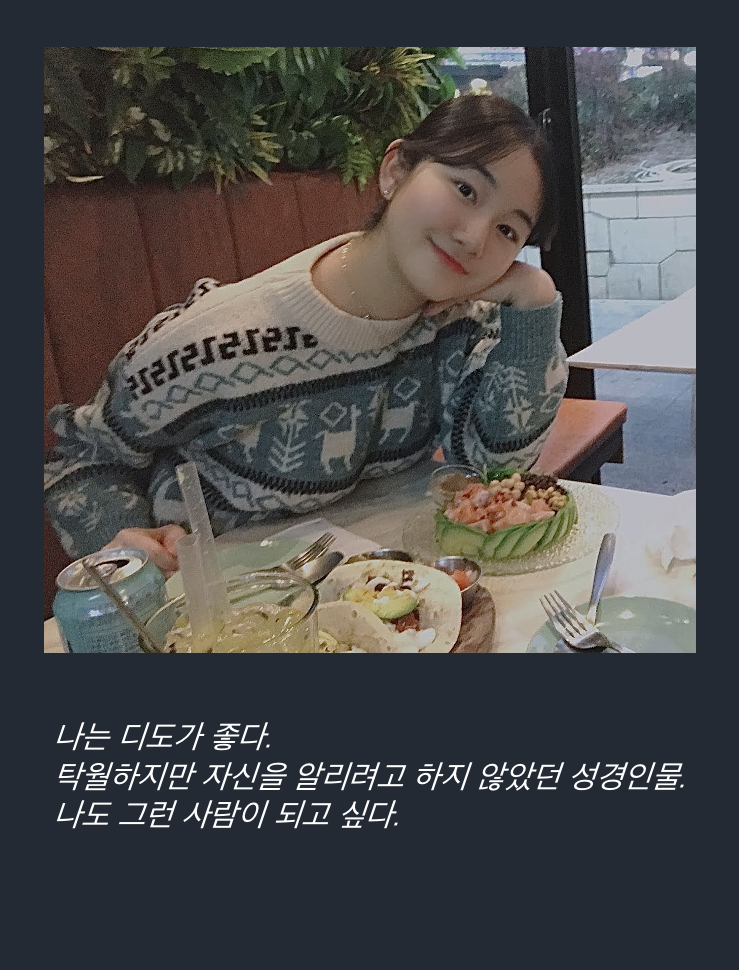

<!doctype html>
<html>
    <head>
        <meta charset="UTF-8">
        <meta name = "viewport" content = "width = device-width, initial-scale=1.0">
        <title>HAGUS HARDWARE</title>
        <link rel="stylesheet" type="text/css" href="../../css/pages.css">
    </head>
</html>

<body>
    <header>
        <h3><a href = "../../index.html">HAGUS <br> HARDWARE</a></h3> 
        <ul id="main_menu">
        </ul>

        <script src = "../../MainMenu.js"></script>
    </header>

    <section class="section">
    <div id = "tag_menu">
    </div>

    <script src = "../../tag_menu.js"></script>

    <div id = "tag_list">
        <div class="l_title"><a href = "../../tag.html">History. </a></div><hr>
        <div class = "l_subtitle"><div class = "title"><a href = "../../tag.html"><strong>[Diary] Collection of my favorite things</div><div id="date">2021.4.28</div></strong></a></div>
             <!--content-->
        <div class = "content">
        <br>
        <br>
        _<br>
        아무말 시작!<br>
        글 솜씨가 없어 시작했다. 글 잘 쓰는 사람들이 부러웠다. 이렇게 조금씩 적다보면 늘지 않을까..ㅎ 사실 이것보다도 뭐라도 적고 정리하고 싶어서, 기록하고 싶고 남기고 싶어서 시작했다. 요즘 생각하는 힘이 너무 약하다ㅠㅠ 생각하면서 살아야지 그 분의 뜻을 구해야지.<br>
        <br>
        <br>
        <br>
        <span class="h">_Simple is the best</span><br>
        나는 심플한 거 굉장히 좋아하는 사람이다. 깔끔한거 좋아한다.<br>
        옷 스타일, 물건 디자인, 인간관계 etc.<br>
        <br>
        <br>
        <br>
        <span class="h">_Hobbies</span><br>
        * Drawing<br>
        음..개강 전 까지 그림그리기였다. 우리 가족들은 대부분 그림을 잘 그린다.(나는 일찍이 소질이 없다고 판단하여 공부하기로 했다.) 휴학하면서 많은 것들을 도전해 보았다. 그 중에 한가지는 그림이었다. 맘 잡고 그리면 그래도 자기만족 수준에는 도달한다....ㅎ<a href ="https://www.instagram.com/hadallog_/">(@hadallog_)</a>방학되면 다시 1일 1그림 해야지ㅠㅠ 시간은 만들면 있지만 마음의 여유가 없는 거 같다. 학기 중에 그림 그리면 괜히 사치부리는 기분이 든다..<br>
        <br>
        * Movie<br>
        영화는 취미라고 하기에는 너무 안보는 거 같다. 그래도 난 영화보는 거 좋아한다. 뭔가 생각 할 거리를 던지는 영화가 좋다. <br>
        <br>

        * Learning<br>
        나는 공부하는 거 좋아한다. 물론 내가 하고 싶은 공부ㅋㅋㅋㅋ나는 내 전공 재밌다. (전공은 나를 싫어하는 거 같지만..ㅜ) 잘하고 싶다. 컴공...그냥 자기개발 하는 거 좋아한다. 무언가 새롭게 배우는 것이 좋다. 다만 끈기가 조금 부족할 뿐..<br>
        <br>

        * Reading<br>
        <br>
        <br>
        <br>
        <span class="h">_Food</span><br>
        * 연어!!!!!(사실 지금 생각나는 거..)<br>
        * 초밥<br>
        * 떡볶이..는 예전만큼은 아니지만 좋아한다.<br>
        * 샐러드<br>
        * 치즈<br>
        대체적으로 자극적이지 않은 음식들을 좋아한다. 맵고 짜고 단거 몸에서 안받아준다...ㅠ<br>
        <br>
        <br>
        <br>
        <span class="h">_이 외의 것들</span><br>
        <br>
        <br>
        <br>
        이건 AS때 만들었던 카드다ㅋㅋㅋㅋ<br> 
        탁월하면서 겸손하다는 것은 쉽지 않다.<br>
        <br>
    
        </div>


    </div>

</section>

    
</body>


